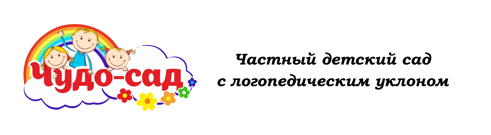

 +7 919 500 49 11
+7 919 500 49 1126 24 02
+7 919 500 49 11Для детей от 1,2-х до 3,5-х лет мы предлагаем посещение групп полного дня и кратковременного пребывания (3 и 5 часов). 2 возрастные группы со своей программой развития и обучения детей: -ясельная группа (дети возраста от 1,2-х до 2,3 лет) -младшая группа (от 2,3-х до 3,8 лет). Наша программа: - логопедические занятия, направленные на развитие речи малышей; - авторская методика, благодаря которой формируются психологические основы для полноценного развития ребенка; - музыкальные занятия и ритмика помогут развить музыкальный слух, звукоподражание и координацию движений; - занятия английским языком в младшей группе (для детей от 2 лет) - ежедневные познавательные и творческие занятия, направленные на развитие памяти, внимания, различные виды восприятия, зрительные, слуховые, моторные функции и межсенсорные связи. Наши преимущества: - малочисленные группы (до 10-12 человек); - логопедические занятия, которые уже входят в стоимость посещения; - собственная огороженная детская площадка с мягким покрытием; - ежедневные прогулки (в весенне-летний период 2 раза в день); - низкая стоимость адаптационного периода (ВСЕГО 6500 руб ) - индивидуальный подход к каждому ребенку (опытные педагоги-психологи учитывают эмоциональные и психологические особенности каждого малыша).
Занятия педагог проводит при активном участии родителей, как правило, мамы. Мама – активный участник общения Что получает ребенок на занятиях «Мама и малыш» * Речевое развитие * Элементы математики * Элементы чтения * Базовые знания об окружающем мире * Развитие всех видов памяти * Развитие крупной и мелкой моторики * Музыкальное развитие: ритмика, развитие музыкального слуха, подпевание и звукоподражание,знакомство с музыкальными инструментами * Элементы детского фитнеса: пальчиковые и жестовые игры, игровая гимнастика, телесные (контактные) игры * Социализация и общение со сверстниками, гармоничное психологическое и социальное развитие
Задачи, которые ставят перед собой занятия рисованием:
- Правильная постановка руки. Правильно поставленная рука с раннего возраста положительно влияет на формирование почерка в будущем. Вы сами можете убедиться в том, что люди, которые в детстве много рисовали, как правило, красиво и разборчиво пишут.
- Развитие детской моторики, напрямую влияющей на речь человека.
- Тренировка памяти. Часто детей преподаватель рисования просит нарисовать что-либо по памяти, например, любимую игрушку или картинку, которую он показывает в течение нескольких минут и убирает из поля зрения.
- Развитие усидчивости на уроке, собранности.
- Обучение азам геометрии и цветоопределению. На уроках рисования ребенок может научиться передаче величин предметов, их пропорциональности. Дети смогут определять и передавать полутона, тени.
- Развитие интереса к творчеству как таковому. Во время занятий рисованием у ребенка активно работает правое полушарие мозга, отвечающее за творческое мышление. Отсюда постепенно сформируется любовь к чтению и другим интеллектуальным занятиям, которые позволят вашему малышу стать разносторонним человеком.
- Развитие таланта. Возможно, таланту нельзя научиться. Но его можно вырастить.
Чтобы заниматься в дошкольном возрасте на уроках рисования у профессиональных педагогов, ребенок изначально не должен обладать вообще никаким художественным талантом. Главное, чтобы ему самому это процесс нравился и был интересен. Родители должны понимать, что ребенок, посещая уроки рисования, необязательно станет маленьким Ван Гогом или Айвазовским. В дошкольном и младшем школьном возрасте не столько важны конечные детские рисунки, сколько решение вышеперечисленных задач.
Занятия проводятся для детей от 3х до 7х лет, разделенным на группы по возрастам численностью от 3 до 6 человек.